Obsah dokumentu
Chtìl bych zde uvést na pravou míru zamìøení tohoto dokumentu, proto�e jej ète velké mno�ství lidí s falešnım oèekáváním.
Tento dokument si klade za cíl seznámit ètenáøe s principem a podrobnostmi komunikace øídící jednotky REGO600 pou�ívané v tepelnıch èerpadlech IVT/Bosch/Autotherm/Carrier a mo�ná i dalších.
Rozhodnì se nejedná o dokument popisující hotovı produkt a ani podrobnı návod jak produkt vyrobit. Je zde detailnì popsán návod na vytvoøení dobré hadrwarové èásti, ale software je popsán pouze principiálnì.
Je zde uveden pøíklad software, kterı lze pou�ít jako modul a nebo k otestování vyrobeného hardware. V ka�dém pøípadì je však nutno do programu zasahovat a minimálnì editovat konstanty v úvodní èásti. Program se spokojí s vypsáním
hodnot na obrazovku. Nemá �ádné u�ivatelské rozhraní a ani grafické vıstupy. Pokud doká�ete myslet na úrovni operaèního systému unixového typu, budete schopni si doplnit grafickı vıstup z jiného programového produktu.
Pokud jste schopni programovat v prostøedí borland delphi pro windows, mohu vám pomoci a mù�eme spoleènì vytvoøit u�ivatelsky pøíjemnı produkt.
Pokud jste schopni programovat v jiném visuálním nástroji pro windows, mohu se pokusit jej pochopit a také vám pomoci
Pokud hledáte hotovı produkt, kontaktujte svého zástupce IVT a ptejte se na produkt IVT@Home
Pokud máte problém s tvorbou hardwarové èásti, pøesvìdèil jsem kamaráda Pavla Dvoøáka, kterı je schopen zaøízení vyrobit a poslat. (cenu, formu dodávky si prosím domluvte individuálnì) Odkaz najdete v èásti FAQ
Bonus pro lidi co ovládají èeštinu: pokud vás zajímají moje zkušenosti s tepelnım èerpadlem (provoz, instalace), pošlete mi e-mail na adresu uvedenou na konci dokumentu a urèitì vás neodmítnu.
|
Document scope
I would like to describe scope of this document, because so many people trying to find there information which is not primary part of that document.
Purpurose of this document is inform readers about principles of communication of unit REGO600 used in heatpumps IVT/Bosch/Autotherm/Carrier and others.
Definitly out of scope is description of final product or detail description how to build a product. Here is described in details how to build hardware part, but software part is described only in general.
On the page is presented example of software, which can be used as a module or as a test for hardware part. In each cases must be code edited and configured, minimaly constants in first configuration part. Program simply print out
measured values to screen and finish. There are no user interface or graphical output. If you are able to think in unix type operating system level, you will be able to connect graphical output from other software
If you are able to program in borland delphi for windows, I can help you with it and we can create user friendly product.
If you are able to program in different visual tools for windows, I can try to understand it and try to help you too
If you are looking for finished product, please contact your IVT dealer and ask for IVT@Home product
If making a hardware part is a problem for you, good news is, that I persuade my friend Pavel Dvoøák (who is able to produce and send hardware) to help you. (price and sending method is individual part of agreement with you and Pavel) Reference can be found in FAQ part.
|
Hardware
Na trhu existuje celá øada celkem kvalitních tepelnıch èerpadel vycházejících ze stejného základu vytvoøeného firmou IVT. Jedná se buï o brandovaná oem èerpadla, nebo licenèní stroje. Dají se najít pod znaèkou IVT, Bosch, Carrier, Autotherm a mo�ná i další. Všechna tato èerpadla pou�ívají pro své øízení jednotku Rego 600 nebo novìjší (Rego 6xx).
Tyto øídící jednotky jsou vybaveny komunikaèním rozhraním pro pøipojení poèítaèe nebo jiné øídící jednotky.
Jednotky jsou vybaveny sériovım portem oznaèenım jako "Service". Jeho konektor je v�dy v blízkosti øídící jednotky. Jedná se o 5V variantu sériového portu, tak�e délka kabelu nemá pøesahovat 50cm. Rozhraní je osazeno 9 pin konektorem can/d-sub.
No�ièky konektoru mají následující vıznam:
2 - RxD
3 - TxD
4 - +5V
5 - GND
Komunikace v�dy probíhá rychlostí 19200 bps, 8 bit, bez parity, 1 stop bit (19200/8N1). Jedná se o 5V CMOS 4000 (TTL) signály, které je nutné pøipojovat galvanicky oddìlené. Proto pro jejich pøipojení pou�ijeme optickı oddìlovaè. Napøíklad MCT6, ILD2 nebo podobné.
Pøíklad zapojení optického oddìlovaèe je uveden na následujícím obrázku.
|
Hardware
Here is a few good quality heat pumps on a market, which are based on same conception based by company IVT. That heat pumps are brended or licensed to another companies. It is possible to find them branded as IVT, Bosch, Carrier, AutoTherm and possible others. All that heatpumps using Rego 600 control unit for their driving (or newer Rego 6xx).
Those control units contains serial communication interface marked as "Service". Header of this interface are close of control unit. This is 5V serial interface, it mean their cable may be not longer than 50cm. Interface is connecter by 9 pin can/d-sub connector.
Pinout of this connector are following:
2 - RxD
3 - TxD
4 - +5V
5 - GND
Communication allways using 19200 bps, 8 bit, no parity, 1 stop bit (19200/8N1). This is 5V CMOS 4000 (TTL) signals, which must be connected by galvanic separator. In that case we will use optocoupler for separation. There are available optocouplers for example MCT6, ILD2 or ekvivalent
Example of generic connection are shown on following picture.
|
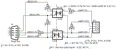

Obr. 0 Základní zapojení | Fig. 0 Basic schematic
|
Toto schéma se dá jednoduše rozšíøit na pøipojení pomocí sériového portu RS-232 (sériovı port v poèítaèi)
Staèí pøidat pøevodník úrovní RS-232 - TTL. Napøíklad obvod MAX232. Jako napájení pro napájení je mo�né pou�ít napøíklad napájení na portu USB. (lze pou�ít i napájení pro klávesnici, nebo gameport, eventualnì jiné metody)
|
It is easy to enhance this schematics to connect to RS-232 serial interface in computers.
Be enough for them RS-232 - TTL level converter. For example MAX232 device. As a source of electric power cam be used for example power pins from USB. (it is also possible to use power for keyboard, gameport or other methods)
|
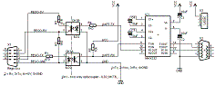
Obr. 1 - pøipojení RS-232 kabelem | Fig. 1 - RS-232 cable connection
|
Hlavní problém tohoto øešení spoèívá v tom, �e tepelné èerpadlo vìtšinou stojí v technické místnosti, v lepším pøípadì v prádelnì nebo koupelnì. Málokdo si pøedem pøipravil datovou konektivitu do místností tohoto typu. Málokdo je také pøipraven nechávat poèítaè v takovéto místnosti.
Proto jsem se rozhodl vyu�ít pro pøipojení ty dráty, které k tepelnému èerpadlu rozhodnì vedou. Tepelné èerpadlo se bì�nì pøipojuje tøífázovou pøípojkou. Proto mù�eme pohodlnì pou�ít zaøízení pro komunikaci po silovém vedení. Navíc si v�dy mù�eme vybrat správnou fázi pro efektivní komunikaci.
Na internetu je pøekvapivì velké mno�ství zaøízení komunikujících malou rychlostí (protokoly X1 a pod), na druhou stranu aliance HomePlug vytvoøila levná zaøízení pro pøanos a� 200mbps. Bohu�el pouze s rozhraním ethernet.
Jako vhodnı kompromis se ukázaly modemy pro komunikaci po silovém vedení typu PLC-485A prodávané pod znaèkou LinkSprite. Modem je mo�né koupit jako modul nebo jako hotová zaøízení.
Pro instalaci do tepelného èerpadla jsem si zvolil modul bez dceøiné desky, ke kterému jsem vyyvpøil vlastní rozhraní.
Na následujícím obrázku je uvedeno schéma dceøiné desky pro pøipojení tepelného èerpadla.
|
Main problem of this solution is, that it usualy located in technical room, in better cases in laundry, washrom or bathroom. Not many users prepared data line to this type of room. Not many users also want to leave computers in that type of room.
In that case I decided to use for connection most comon wires presented here. It is three phase power line wires. In that case we can easily use devices for power line communication. In addition we can chose correct phase for most efective communication.
On the Internet is presented surprising number of devices using small communication speed (for example X1 protocols etc.), from the other hand there is HomePlug aliance makes cheap devices for transfer up to 200mbps. However only with ethernet interface.
As a good compromise look like to be power line communications modems PLC-485 type marked as LinkSprite. It is possible to buy modem as module or as a final devices.
For an installation into heat pump I used module without doughter board. I make myself doughter board with my own interface.
On following picture is presented schematic of that doughter board for connecting the heat pump.
|
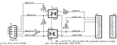
Obr. 2 Pøipojení po elektrické síti | Fig. 2 Power line connection
|
Úprava nové verze PCL modemu
LinkSprite vydalo novou verzi PLC modemu, která má ponìkud neš�astnì vyøešenou citlivost vstupních svorek.
Proto jsem musel pøidat obvod pro posílení a upravení hran.
Vyzkoušel jsem dvì varianty pøipojení. Jednodušší varianta (A) pouze zesiluje signál, rozšíøená varianta (B) navíc pøidává led diodky pro umístìní na panel.
Pokud máte problém s pøipojením k poèítaèi (pozná se tak, �e zaøízení nesprávnì reaguje na "+++"), doporuèuji také pøidat zesilovaè na stranu poèítaèe.
|
Enhancement for new version of PLC modem
LinkSprite released new version of PLC modem. This version of modem have little distressful sensitivity for input pins.
In that case I must add circuit for ampfiling and forming of signal.
I have tested two versions of circuit. First - easier variant (A) only ampfiling the signal, second variant (B) also adding led diodes for placing on front panel
If you will found problems also with interconnection to computer (found, that modem not responding to "+++" sequence), I recomend to add ampfiler to computer side too.
|
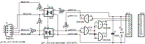
Obr. 3-A Pøipojení po elektrické síti / jednoduché | Fig. 3-A Power line connection / simple
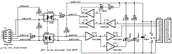
Obr. 3-B Pøipojení po elektrické síti / zábavné | Fig. 3-B Power line connection / funny

Obr. 3-C Pøipojení po elektrické síti / minimalistické | Fig. 3-C Power line connection / minimalistic
Pro informaci - verzi 3-C aktuálnì pou�ívám | For your info: I'm currentely using version 3-C
|
Pro praktickou realizaci jsem pou�il vodìodolnou, po�ár nešíøící krabièku, do které se pohodlnì vejde celé zaøízení. Dceøinou desku jsem, vzhledem k její jednoduchosti, osadil na univerzální plošnı spoj.
Celou krabièku je nutné umístit do blízkosti øídící jednotky. To je dùle�ité brát v úvahu pøi mechanické konstrukci.
Také je dùle�ité vzít v úvahu chlazení. Uvnitø tepelného èerpadla je celkem dost teplo a špatná cirkulace vzduchu.
Následující fotografie ukazují praktickou realizaci.
|
For practiacal realisation i have used water proof, fire proof box, which easy fitting all device. Becouse doughter board is simple, I have done it on universal circuit board.
All device must be placed close of controll unit. It is necessary to care about it during mechanical construction, because in this part of heatpump is not enoughtplace.
It is necessary to thing about cooling. Inside heatpump is higher temperature and wrong air circulation.
Following photos showing my working example.
|
|
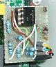
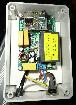
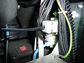
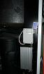
|
Poznámky:
- zjistil jsem, �e zaøízení nefunguje správnì s nìkterımi USB<->RS-232 porty.
- pro jednoduché ovládání existuje komfortní software StatLink.
- pøed uvedením do provozu je nutné nastavit komunikaèní rychlost na zaøízení na 19200bps.
- v Èechách neexistuje maloobchodní prodejce 2mm konektorù pro digi sbìrnici. Je však mo�né pou�ít jiné konektory dostupné na modulu.
- IVT pøipravuje vlastní software pod oznaèením IVT@Home.
- Také je k dispozici fórum o PLC.
|
Notes:
- I have found, that device not working correctly with some USB<->RS-232 transceivers.
- for easy use exist comfortable software StatLink.
- it is neccesary to configure device for using 19200bps baudrate.
- in CZ is no end seller for 2mm headers for digi bus. It is posible to use other headers on modules.
- IVT preparing own software called IVT@Home.
- There is available forum about PLC.
|
Software
Komunikace probíhá v�dy prostøednictvím paketù stejné délky a stejné struktury. Následující obrázek ukazuje pøíklad takové komunikace.
|
Software
Communication running allways by using packet same size and same structure. Following picture displaying example of that communication.
|
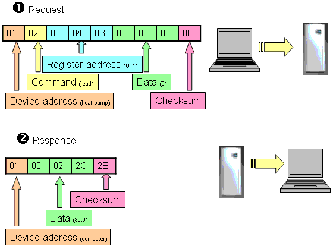
Obr. 4 Struktura komunikaèních paketù | Fig. 4 Structures of communication packets
|
Všechna èísla jsou zobrazována v šestnáctkovém tvaru (hex).
Paket po�adavku má v�dy 9 znakù (èísel). Odpovìï existuje standardní 5 znakù, nebo prodlou�ená 42 znakù.
Reprezentace èísel
Rego6xx pou�ívá 7 a ménì bitù pro komunikaci, vìtšina èísel je reprezentovaná jako 16ti bitová. Pøi komunikaci se nejprve posílá vyšší øád.
V pøípadì teploty se posílá desetinásobek jako celé èíslo ve formátu dvojkového doplòku.
Napøíklad:
Register 020B je šestnáctibitové èíslo.
Rozepíšeme si jej do dvojkového 0000 0010|0000 1011
Od konce si oznaèíme skupiny po 7 bitech 00|0000100|0001011
A dostaneme èíslo v 7 bit reprezentaci 00 04 0B
Obdr�íme teplotu 00 04 38
Rozepíšene si 7 bitová èísla za sebe: 0000000|0000010|0111000
Vyznaèíme si øády 8 mitové reprezentace 00000001|00111000
A dostaneme èíslo: 138(hex) 312(desítkovì)
Teplota je tedy desetina 31,2C
Obdr�íme teplotu 03 7C 1D
Rozepíšene si 7 bitová èísla za sebe: 0000011|1111100|0011101
Vyznaèíme si øády 8 mitové reprezentace 11111110|00011101
A dostaneme èíslo: FE1D(hex) 65053(desítkovì)-483(dvojkovı doplnìk)
Teplota je tedy desetina -48,3C
Adresa(Address)
Pravdìpodobnì umo�òuje adresovat více zaøízení, já jsem narazil pouze na adresování 81 tepelné èerpadlo a 01 poèítaè.
Pøíkaz(Command)
Pravdìpodobnì existuje tabulka pøíkazù, kterou se pokusím vytvoøit. Zatím mám velice málo informací.
|
All numbers are displayed in hex format.
Request packet allways consist of 9 characters (numbers). Response exist in standard form (5 characters) or long form (42 characters).
Representation of numbers
Rego6xx using 7 and less bits for communication. Most numbers are represented as a 16bit numbers. For communication higher part of numbers are send first.
For representing temperature is used ten multiple as a sign integer.
For example:
Register 020B is sixteen bit number.
Let's write it in binary form 0000 0010|0000 1011
Now we can mark 7 groups from the end 00|0000100|0001011
And now we have this number in 7 bit form 00 04 0B
We have received temperature 00 04 38
Let's write 7 bit numbers in binary form 0000000|0000010|0111000
We will mark 8 bit delimiters 00000001|00111000
It is: 138(hex) 312(dec)
In that case temperature is 31.2C
We have received temperature 03 7C 1D
Let's write 7 bit numbers in binary form 0000011|1111100|0011101
We will mark 8 bit delimiters 11111110|00011101
It is: FE1D(hex) 65053(dec)-483(signed integer)
Received temperature is -48.3C
Address
It is possible, that it alows to have more devices on line. I have found only addresing 81 for heatpump and 01 for computer.
Command
There must exist table of commands. I will try to create some. Currentely I have not enough information.
|
| Pøíkaz | hex | param | resp | Command |
|---|
Ètení dat z panelu
(klávesy+led) | 00 | 1 - address | 5char 16bit number | Read from front panel
(keyboard+leds) {reg 09FF+xx} |
Zápis do èelního panelu
(klávesy+led) | 01 | 2 - address + data | 1char confirm | Write to front panel
(keyboard+leds) {reg 09FF+xx} |
Ètení ze systémováho registru
(topná køivka, teploty, stav zaøízení) | 02 | 1 - address | 5char 16bit number | Read from system register
(heat curve, temperatures, devices) {reg 1345+xx} |
Zápis do systémováho registru
(topná køivka, teploty, stav zaøízení) | 03 | 2 - address + data | 1char confirm | Write into system register
(heat curve, temperatures, devices) {reg 1345+xx} |
| Ètení registrù èasovaèù | 04 | 1 - address | 5char 16bit number | Read from timer registers {reg 1B45+xx} |
| Zápis registrù èasovaèù | 05 | 2 - address + data | 1char confirm | Write into timer registers {reg 1B45+xx} |
| Ètení z registrù 1B61 | 06 | 1 - address | 5char 16bit number | Read from register 1B61 {reg 1B61+xx} |
| Zápis do registrù 1B61 | 07 | 2 - address + data | 1char confirm | Write into register 1B61 {1B61+xx} |
| Ètení z displaye | 20 | 1 - display line | 42char text line | 42char - text lineRead from display {0AC7+15h*xx} |
| Ètení poslední chyby | 40 | 0 | 42char text line | Read last error line [4100/00] |
| Ètení pøedchozí chyby | 42 | 0 | 42char text line | Read previous error line (prev from last reading) [4100/01] |
| Verze rego jednotky (v�dy 600) | 7F | 0 | 5char 16bit number | Read rego version
{constant 0258 = 600 ?Rego 600?} |
Tab. 1 seznam pøíkazù | Tab 1. list of commands
|
Adresa registru(Register address)
Pravdìpodobnì existuje tabulka registrù, kterou se pokusím vytvoøit. Zatím mám velice málo informací. Tabulka se mírnì liší pro rùzné typy èerpadel a pro rùzné verze jednotek Rago6xx.
|
Register address
There must exist table of registers. I will try to create some. Currentely I have not enough information. Table contains a small differences for different versions of heat pump and for different versions of Rego6xx controllers
|
| Registr | Rego600-635 | Rego636-... | Register |
|---|
| | | | |
| Hodnoty èidel | | | Sensor values |
| Zpáteèka [GT1] | 0209 | 020B | Radiator return [GT1] |
| Venkovní [GT2] | 020A | 020C | Outdoor [GT2] |
| Bojler [GT3] | 020B | 020D | Hot water [GT3] |
| vıstup do smìš. okruhu [GT4] | 020C | 020E | Forward [GT4] |
| Místnost [GT5] | 020D | 020F | Room [GT5] |
| Kompresor [GT6] | 020E | 0210 | Compressor [GT6] |
| Teplı okruh vıstup [GT8] | 020F | 0211 | Heat fluid out [GT8] |
| Teplı okruh vstup [GT9] | 0210 | 0212 | Heat fluid in [GT9] |
| Studenı okruh vstup [GT10] | 0211 | 0213 | Cold fluid in [GT10] |
| Studenı okruh vıstup [GT11] | 0212 | 0214 | Cold fluid out [GT11] |
| Externí bojler [GT3x] | 0213 | 0215 | External hot water [GT3x] |
| | | | |
| Hodnoty zaøízení | | | Device values |
| Obìhové èerpadlo zemního okruhu [P3] | 01FD | 1FF | Ground loop pump [P3] |
| Kompresor | 01FE | 0200 | Compresor |
| Pøídavné topení 3kW | 01FF | 201 | Additional heat 3kW |
| Pøídavné topení 6kW | 0200 | 202 | Additional heat 6kW |
| Radiátorové èerpadlo [P1] | 0203 | 0205 | Radiator pump [P1] |
| Èerpadlo vnitøního obìhu [P2] | 0204 | 0206 | Heat carrier pump [P2] |
| Rozdìlovací trojcestnı ventil [VXV] | 0205 | 0207 | Tree-way valve [VXV] |
| Porucha | 0206 | 0208 | Alarm |
| | | | |
| Øídící data | | | Control data |
| GT1 Cílová hodnota | 006E | 006E | GT1 Target value |
| GT1 Zapínací hodnota | 006F | 006F | GT1 On value |
| GT1 Vypínací hodnota | 0070 | 0070 | GT1 Off value |
| GT3 Cílová hodnota | 002B | 002B | GT3 Target value |
| GT3 Zapínací hodnota | 0073 | 0073 | GT3 On value |
| GT3 Vypínací hodnota | 0074 | 0074 | GT3 Off value |
| GT4 Cílová hodnota | 006D | 006D | GT4 Target value |
| Dotop v % | 006C | 006C | Add heat power in % |
| | | | |
| Nastavení | | | Settings |
| Topná køivka | 0000 | 0000 | Heat curve |
| Jemné doladìní | 0001 | 0001 | Heat curve fine adj. |
| Nastavení vnitøní teploty | 0021 | 0021 | Indoor temp setting |
| Vliv vnitøní tepl. na køivku | 0022 | 0022 | Curve infl. by in-temp. |
| Prizp. krivky pri 20° venku | 001E | 001E | Adj. curve at 20° out |
| Prizp. krivky pri 15° venku | 001C | 001C | Adj. curve at 15° out |
| Prizp. krivky pri 10° venku | 001A | 001A | Adj. curve at 10° out |
| Prizp. krivky pri 5° venku | 0018 | 0018 | Adj. curve at 5° out |
| Prizp. krivky pri 0° venku | 0016 | 0016 | Adj. curve at 0° out |
| Prizp. krivky pri -5° venku | 0014 | 0014 | Adj. curve at -5° out |
| Prizp. krivky pri -10° venku | 0012 | 0012 | Adj. curve at -10° out |
| Prizp. krivky pri -15° venku | 0010 | 0010 | Adj. curve at -15° out |
| Prizp. krivky pri -20° venku | 000E | 000E | Adj. curve at -20° out |
| Prizp. krivky pri -25° venku | 000C | 000C | Adj. curve at -25° out |
| Prizp. krivky pri -30° venku | 000A | 000A | Adj. curve at -30° out |
| Prizp. krivky pri -35° venku | 0008 | 0008 | Adj. curve at -35° out |
| Spojeni rozdilu topne krivky | 0002 | 0002 | Heat curve coupling diff. |
Tab. 2 seznam systémovıch registrù (81|02 a 81|03) | Tab 2. list of system registers (81|02 and 81|03)
| Øádek | Rego600-635 | Rego636-... | Line |
|---|
| | | | |
| Display | | | Display |
| Èasovaè dotopu v sec. | 0000 | 0000 | Add heat timer in sec. |
Tab. 3 seznam èasovaèù (81|04 a 81|05) | Tab 3. list of timers (81|04 and 81|05)
| Øádek | Rego600-635 | Rego636-... | Line |
|---|
| | | | |
| Display | | | Display |
| Øádek 1 * dlouhá data | 0000 | 0000 | Row 1 * long data |
| Øádek 2 * dlouhá data | 0001 | 0001 | Row 2 * long data |
| Øádek 3 * dlouhá data | 0002 | 0002 | Row 3 * long data |
| Øádek 4 * dlouhá data | 0003 | 0003 | Row 4 * long data |
Tab. 4 seznam øádek displeje (81|20) | Tab 4. list of display lines (81|20)
| Element | Rego600-635 | | Rego636-... | Element |
|---|
| | | | | |
| LED | | | | LED |
| LED 1 napájení | ?0012? |  | ?0012? | LED 1 (power) |
| LED 2 èerpadlo | 0013 |  | 0013 | LED 2 (pump) |
| LED 3 ?dotop? | 0014 |  | 0014 | LED 3 (?add heat?) |
| LED 4 bojler | 0015 |  | 0015 | LED 4 (bojler) |
| LED 5 alarm | 0016 |  | 0016 | LED 5 (alarm) |
| | | | | |
| Klávesnice | | | | Keyboard |
| Vypínaè (Zap/Vyp) | 0008 | | 0008 | Power (On/Off) |
| Klávesa 1 (Teplo) | 0009 | | 0009 | Key 1 (Temp) |
| Klávesa 2 (Info) | 000A | | 000A | Key 2 (Info) |
| Klávesa 3 (Menu) | 000B | | 000B | Key 3 (Menu) |
| Koleèko | 0044 | | ?? | Wheel |
Tab. 5 èekní panel (81|00 a 81|01) | Tab 5. front panel (81|00 and 81|01)
|
Data
Hodnota pro zapsání do registru pro zápisové pøkazy. V pøípadì ètecích pøíkazù se odesílá 0000.
Hodnota pøeètená z registru v odpovìdi.
Kontrolní souèet(Checksum)
Tato hodnota pøedstavuje exclusive-or (xor) ze znakù adresy registru a dat u poøadavku a z dat u odpovìdi.
Dlouhá data
Existuje zvláštní paket odpovìdi, kterı se posílá v pøípadì ètení displaye.Jeho délka je 42 znakù.
Tento paket se odesílá jako odpovìï na pakety: 81|20|00|00|00|00|00|00|00 - 81|20|00|00|03|00|00|00|03.
Tento paket obsahuje na prvním místì adresu cíle a následuje 20 dvojic znakù, které vyjadøují znaky na display. Dá se pøedpokládat,
�e èerpadlo pou�ívá bì�nı øádkovı display a proto jeho znaková sada bude odpovídat následujícímu obrázku.
Znaky jsou kódovány jako ètyøbitové a to tak, �e nejprve pøijde sloupec a pak øádek. Pro bì�né znaky je kódování stejné jako znaková
sada poèítaèe, tak�e je mo�né dvojice slouèit a zobrazovat pøímo.
Pøíklad:
Dostaneme paket: 01|05|02|06|05|06|07|06|0F|03|06...
První znak je adresa cíle: 01=poèítaè
Následující znaky mù�eme slouèit do dvojic: 52|65|67|6F|36...
A vypsat si je pøímo jako znaky podle ascii tabulky: Rego6...
(Poslední znak, kterı není zveøejnìn je kontrolní souèet, xor stejnì jako v ostatních pøípadech.)
|
Data
Value for writting into register for writting commands. In a case of read commands it is 0000.
Value readed from register for responses.
Checksum
This value representing exclusive-or (xor) of all characters of address and data in a request, or data in a response.
Long data
Exist special packet for response, which sending in a case of reading display. This packet is 42 character long.
This packet sends especialy for requests: 81|20|00|00|00|00|00|00|00 - 81|20|00|00|03|00|00|00|03.
First character contains destination addres, followed by 20 doubles of characters, presenting characters on display. It can be presumed,
that pump using standard character LCD display. In that case character set of that display will be same as following image.
Characters are coded as four bit pairs. First character informing about column, second about row of character. For standard characters
is encoding same as computer character table, in that case is possible to concat doubles and present it directly.
Example:
We will receive packet: 01|05|02|06|05|06|07|06|0F|03|06...
First character representing destination: 01=computer
Following characters can be concated by pairs: 52|65|67|6F|36...
And display by standard ascii table: Rego6...
(Last character is checksum, not shown in example, is checksum. Same xor as other packets.)
|
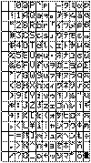
Obr. 5 Znaková sada displaye | Fig. 5 LCD character set
|
Klávesy
Klávesy mají registry. Stisk klávesy se provede zapsáním "1" do jejich registru
Nepøíklad 81|01|00|00|09|00|00|01|08 znamená stisk levé klávesy (v klidovém stavu Info)
Odpovìï na klávesy je jednoznaková - v�dy 01
Vyjímkutvoøí koleèko. Otoèení doprava znamená zápis "1", otoèení doleva "1FFFFF"
Nepøíklad 81|01|00|00|44|00|00|01|45 ->>
Nepøíklad 81|01|00|00|44|7F|7F|7F|3B <<-
Seznam poruch
Pro ovládání seznamu poruch jsou jsou k dispozici dva pøíkazy: 40 a 42. Pokud zadáme pøíkaz 40 (81|40|00|00|00|00|00|00|00) dostaneme poslední
chybu zapsanou v registru chyb.
Pøíkazem 42 (81|42|00|00|00|00|00|00|00) dostaneme chybu, která je v poøadí pøed tou, kterou jsme vypsali minule. To se vztahuje k opakovanému volání pøíkazu.
Odpovìï na tyto dotazy je formou dlouhého paketu (42 znakù), kterı se dekóduje stejnì jako øádky displaye. Jenom nìkteré znaky mají jinı vıznam:
První znak má èíselnou hodnotu, následuje 15 znakù datumu a èasu, a pak další 4 èíselné znaky.
První èíslo znamená typ chyby (viz tabulka), tøetí èíslo je 0 pro korektní chybu. Pokud pøeèteme vèechny chyby, dostaneme èíslo chyby 255 a tøetí èíslo 150.
Napøíklad:
Log 40 =|22|090319 18:21:05|0|48|2|32|
Log 42 =|10|090314 18:53:11|0|48|2|32|
Log 42 =|22|090312 21:46:33|0|48|2|32|
...
Reg 42 =|255|0ÿÌ:56:16|150|48|2|32|
|
Keyboard
Each key have own register. Press of key mean write "1" into register
For example 81|01|00|00|09|00|00|01|08 mean press of left key (in silence state Info)
Response to key press are allways single charecter - allways 01
Difference is wheel. Turn to right mean write "1", turn to left mean "1FFFFF"
For example 81|01|00|00|44|00|00|01|45 ->>
For example 81|01|00|00|44|7F|7F|7F|3B <<-
Error log
For managing error log is there two commands: 40 and 42. When we send command 40 (81|40|00|00|00|00|00|00|00) we will receive last known error
stored in the registry.
By sending command 42 (81|42|00|00|00|00|00|00|00) we will receive previous error. (repeeting this request we will receive prev-prev error.
Response for this commands is long packet (42 chars), which may be decoded same way as display packet. Only some characters have special functions
First character representing numeric value, next 15 characters representing date and time of error. And next is 4x numerich characters.
First number reprezenting error number (see table), third number is 0 for correct record. When we read all records, we will receive line with error no 255 and third number 150.
For example:
Log 40 =|22|090319 18:21:05|0|48|2|32|
Log 42 =|10|090314 18:53:11|0|48|2|32|
Log 42 =|22|090312 21:46:33|0|48|2|32|
...
Reg 42 =|255|0ÿÌ:56:16|150|48|2|32|
|
| Chyba | # | Error |
|---|
| | | |
| Èidlo zpáteèky (GT1) | 0 | Sensor radiator return (GT1) |
| Venkovní èidlo (GT2) | 1 | Outdoor sensor (GT2) |
| Èidlo TUV (GT3) | 2 | Sensor hot water (GT3) |
| Èidlo smìšovacího ventilu (GT4) | 3 | Mixing valve sensor (GT4) |
| Pokojové èidlo (GT5) | 4 | Room sensor (GT5) |
| Èidlo kompresoru(GT6) | 5 | Sensor compressor (GT6) |
| Èidlo teplı okruh vıstup (GT8) | 6 | Sensor heat tran fluid out (GT8) |
| Èidlo teplı okruh vstup (GT9) | 7 | Sensor heat tran fluid in (GT9) |
| Èidlo studenı okruh vstup (GT10) | 8 | Sensor cold tran fluid in (GT10) |
| Èidlo studenı okruh vıstup (GT11) | 9 | Sensor cold tran fluid in (GT11) |
| Ochrana motoru kompresoru (MB1) | 10 | Compresor circuit switch |
| Elektrokotel (EK) | 11 | Electrical cassette |
| Ochrana motoru studeného èerpadla (MB2) | 12 | HTF C=pump switch (MB2) |
| Presostat nízkotlakı (LP) | 13 | Low pressure switch (LP) |
| Presostat vysokotlakı (HP) | 14 | High pressure switch (HP) |
| Vysoká teplota zpáteèky (GT9) | 15 | High return HP (GT9) |
| Vysoká teplota vıstupu (GT8) | 16 | HTF out max (GT8) |
| Nízká teplota vstupu st. okruhu (GT10) | 17 | HTF in under limit (GT10) |
| Nízká teplota vıstupu st. okruhu (GT11) | 18 | HTF out under limit (GT11) |
| Pøehøátí kompresoru (GT6) | 19 | Compressor superhear (GT6) |
| Chyba sledu fází | 20 | 3-phase incorrect order |
| Závada na napájení | 21 | Power failure |
| Vysoká delta KPT (GT8/GT9) | 22 | Varmetr. delta hoch |
| ... | | ... | |
Tab. 6 seznam chyb (pro model Greenline)| Tab 6. List of errors (for Greenline series)
|
Èemu nerozumím
Jaké je mapování koleèka na 636???
Existuje detailnìjší popis registrù?
Popis registrù zaøízení?
Øídící jednotka komunikuje i ve vypnutém stavu. (Kdy� bliká power led) Dá se na dálku zapnout?
Kde jsou ulo�eny bezpeènostních hodnoty (maximální teplota, maximální delta KPT,...)
Kde (a jak) jsou ulo�eny hodnoty èasovaèù (pro re�im dovolená? pro èasové øízení?)
|
Open questions
What is wheel mapping on 636???
Exist detailed list of registers?
Keys have single character response?
Control unit responding also in standby state. (when power led blinking) Is it possible to switch pump on?
Where are stored security limits (maximum temp, maximum HTF c-pump switch [Motorskydd KB.pump])?
Where (and what) is stored information about timers (for holiday mode, for clock setting)
|
Pøíklad
Praktická funkènost se dá vyzkoušet napøíklad na grafech teplot z mého tepelného èerpadla. Jedná se o èerpadlo IVT Greenline C6+ s øízením Rego636.
Download
Všechny své programové pokusy tvoøím v jednom souboru. Tento soubor je zatím bohu�el jen snùškou poznámek a funkcí.
Aktuální verzi je mo�né si stáhnout ZDE
(jedná se o pracovní verzi a jestli�e jí právì edituji, pak v ní mohou bıt i chyby. Pokud narazíte na chybu, stáhnìte si jej znovu za párminut.)
Poznámka
Tento dokument vzniká jako moje poznámky. Velice rád si pøeètu jakıkoli komentáø. Pokud máte nìjaké informace, nebo dotazy, pošlete mi email.
|
Example
Practical example can be tested on temperature graphs from my heatpump. It is heat pump IVT Greenline C6+ with Rego636.
Download
All my programming tests I'm doing in one file. This file is still set of notes and functions
It can be downloaded HERE
(It is working snapshot and is possible that I§m editing it and is there some bugs. If found, download again in few minutes.)
Note
This document is created as my notes. I would like to read any comments. If you have any knowledge, questions, remarks, send me email.
|